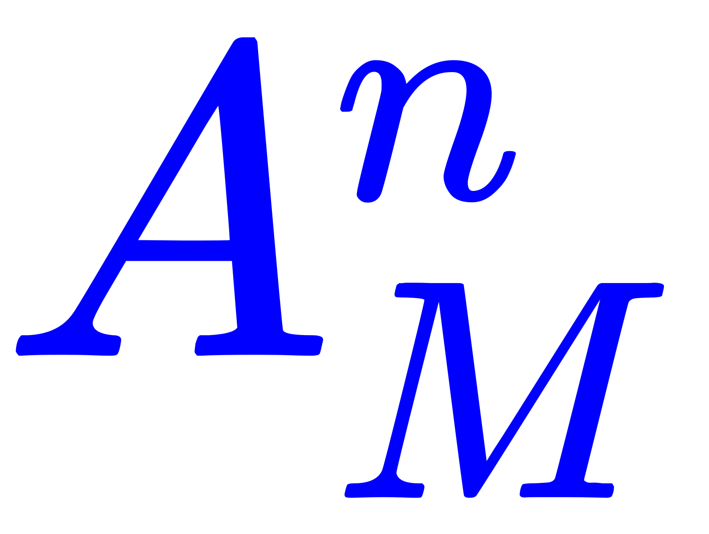

我们把只涉及有限个事件概率的那一部分概率论称作「初等概率论」。
——柯尔莫戈洛夫《概率论的基本概念》
编号又到了「大衍之数五十」了也。按照预告，新年伊始先花了三天时间，在政治和意识形态斗争的本职工作之余，看完了面向工科的《概率论基础教程》，顾名思义比较简单，于是头疼暂停了三天。
先看工科课本是为了「预习」，提前做好心理准备，然后轮到捡起数学专业课本「复习」了也。抄袭剽窃新时代中国特色社会主义大好形势下繁荣的中文互联网上精通盎格鲁语的色目宣传工作者的措辞：「预习」（preview
）和「复习」（review
）之间，有个「屁」（P
）的区别，通常还「连个屁都留不下」。
还是抄袭剽窃色目宣传工作者的措辞，说「经济基础决定上层建筑」，兲朝「上层」把持了「经济」，虽然或许勉强大约的确承认「贱种屁民韭菜抹布炮灰」可能有「自由意志」，但与此同时还会反复强调「然而并没有什么卵用」，一言以蔽之「虽然你很丑，但是你穷啊」……于是教材暂时没得「拣选」，手头有什么看什么，有待将来在兲朝经济稳中向好的大背景下，再咬紧牙关勒紧裤腰带，饥寒交迫的向兲朝特色民族企业「租借」并依法纳税。
众所周知现代（公理化）概率论是苏修数学家柯尔莫戈洛夫（1903-1987）创建的，刚好手头有套施里亚耶夫两卷本《概率》属于应景的21世纪与时俱进教材。在其开头，明确写出向柯尔莫戈洛夫诞辰一百周年致敬，第一章〈初等概率论〉的标题命名就来自柯尔莫戈洛夫：
我们把只涉及有限个事件概率的那一部分概率论称作「初等概率论」。
——柯尔莫戈洛夫《概率论的基本概念》
苏修特色数学专业教材的风格众所周知，充沛着包括但不限于物理在内的各种与建设有啥特色之社会主义现代化强国相关的「应用」内容，通常让一部分欧萌特色学阀出身的人缘甚好の学霸，以及几乎全部盎格鲁特色学阀出身的情商特高の学霸，甚至还包括了个别兲朝特色社会主义高等教育所培养的识大体顾大局懂政治讲规矩守纪律の学霸，纷纷嘲讽不已。
比如第8页的列表，对比了通常下放到中学阶段的「古典概型」之老迈年高数学思维和「当代主流物理价值观」，也就是在「泡利不相容原理」（书中将「不相容」称作「抑制」）前提下各种「捅妓」方式。
对应「中学数学课本」当中「从M个球中抽取n个」之类例题，在「大学物理课本」上则是用「把n个质点分配到M个箱中」类比。前面简单讲了7页，立刻就能得出结论：
| № | 老迈年高数学思维 | 当代主流物理价值观 | 方案总数 | 相应「捅妓」之命名 |
|---|---|---|---|---|
| 1 | 放回、有序 | 可辨、有抑制 | 麦克斯韦－玻尔兹曼统计 | |
| 2 | 放回、无序 | 不可辨、有抑制 | 博泽－爱因斯坦统计 | |
| 3 | 不放回、有序 | 可辨、无抑制 | （排列数） | （物理学中没发现） |
| 4 | 不放回、无序 | 不可辨、无抑制 | （组合数） | 费米－狄拉克统计 |
不知道其它读者什么想法。但是在我这「在野的职业政治家兼职业神棍」看来，其中蕴涵着充沛的政治和意识形态内容并体现了政治和意识形态斗争新动向，包括但不限于唯啥主义、务实还是务虚。
哪怕读者表示对政治和意识形态不感兴趣，那么还可以站在「打酱油做俯卧撑看热闹不嫌事大」立场上从「精神病仆街写手不入流码农数学渣」角度，不惮以最大的恶意揣测字里行间所蕴涵的充沛恶意。
毫不「惊奇」（可以精确计算信息「熵」），「情商负无穷」的我的第一反应，乃「概率为壹」之必然事件：不忘初心牢记使命，在为了为了政治和意识形态斗争创作的《设定集》过程中夯实数学基础而开始的恶补过程中，找的就是「物理学中没发现」的本位面不存在的「捅妓」。
然后就头疼了三天，截至目前刚看完第二章前三节。又找到一条可供完善设定的线索，在第165页，大意如下：
任何分布函数F(x)都可以表示为离散分布函数F1(x)、绝对连续分布函数F2(x)、奇异连续分布函数F3(x)三种分布函数的凸组合：
F(x) = α1F1(x) + α2F2(x) + α3F3(x)
其中α1, α2, α3 ≥ 0均为非负实数，并且α1 + α2 + α3 = 1。
书中用构造「康托集」的方式讲解「奇异型分布函数」的「增长点」，所有「增长」的「时机」之总体，测度为零。
不惮以最大的恶意揣测其中蕴涵的充沛政治和意识形态内容，这意味着「不可认知」。也就是说放诸四海而皆准的金融市场中，只有《超凡贵族》才能精准把握每一次「增长」，是为「有錢是真的能為所欲為的.gif」者也。
而那些「贱种屁民韭菜抹布炮灰」甚至「宠物」「畜牲」，再怎么撸起袖子加油干，其收益也为「零」。没有倾家荡产妻离子散抑郁症发作自绝于龙裔，那都是贵种为了自己日益增长的美好精神文化需求，「大发善心」留尔一条贱命以供娱乐至死。
至于为什么，按照色目宣传工作者不打自招的爆料，「作者最大剧本钦定导演叫人三更死谁敢留人到五更」「朕即国家我就是大局你们要顾全大局」，说当代「作者编剧导演」高瞻远瞩算无遗策，以啥「创世神」的身份按照加尔文主义钦定论歪理邪说，「构造」了这个「奇异」的金融环境。
这「创世神」手下「得意门生」如车载斗量不可胜数，外围「色目混混鸡鸣狗盗之徒」更是极大充沛，把所有机构渗透得如同筛子一样，「玩家」自己投资上传的是交易指令副本，正本跑到「创世神」所在「伊甸园」那里去了，顺便还可以通过「大数据」手段将任何「玩家」的言行举止吃喝拉撒睡视同透明。
对了，这「创世神」还掌握了「法则」力量，如果「玩家」适应了规则，「运营商」就改变规则……于是地球上八十亿「猴子」无论咋个蹦跶都逃不出天竺外宾「疙瘩头」の手掌心，民怨沸腾还可以「徐徐消化之」乃至「一力降十会」严厉打击和残酷镇压，是为「兲命气数」者也。
同样毫不「惊奇」，「言必信行必果硁硁然」的我，看到这条线索之后的第一反应，同样是个概率为壹的必然事件。
结合前一篇提到的截止到去年的构思，从形式上揣测这个可以表达任何分布函数的「凸组合」当中，三种「基本类型」疑似啥「空间」的一组「基」，可以从哪儿咋个「投影」到紧致三维的「卡壳世界」当中以「下放」随机性。
于是，「走毕派」叫嚣着有限精度的有理数域上涌现出当代主流物理价值观，在「希帕索斯会」看来仅仅是现实的「近似」，只能适用于「初等概率论」起到了「决定性」作用的场合。
到这里还没涉及「不可测集」，书中也提到了公理化概率论已经排除了无法定义测度的情况，相关知识点仍然属于本科阶段能够掌握的内容。